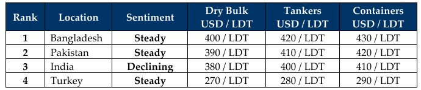

inWeekly Demolition Reports19/01/2026

Post–New Year developments and shocking events have continued to send reverberations across the markets, directly and indirectly,following the surreal extrication of President Maduro and his wife from Venezuela under Trump’s orders — with clear intentions around the country’s oil riches — followed by his marble-chasing claims over Greenland that are based on similarly wet-spaghetti logic, which has since sparked a serious fallout with several European and even Canadian leaders to match. What a time to be a witness.
In the meantime, S&P markets saw at least one buyer in particular, who has been making some major plays on VLCC assets as secondhand values show few signs of deterioration — and the Baltic Exchange Dry Index echoed just that this week as it halted a nine-session slide to mark a 2.3% U-turn, climbing to 1,567 points. This was driven by gains across segments: Capes (up 2.3%), Panamax (up 4.3%), and the smaller segments adding four points by week’s end. Notably, the overall benchmark index still finished the week down 7.2%. Oil too continued to trip on itself and stayed below the coveted USD 60/barrel mark despite a 0.4% increase, closing the week out at USD 59.44/barrel.
The U.S. Dollar meanwhile dominated all ship recycling currencies this week, while local steel plate prices across destinations dissolved into a mixed bag of opposing moves — both competitively and historically (i.e., versus last week).
As such, ship recycling markets may be continue to deprived of tonnage as hopes for a brighter start to 2026 — indicated by the tapering indices back in November – December 2025 — begin to fade once again. Prices across the Indian sub-continent have meanwhile continued their own song and dance on a downward path over the last month, with dry bulk indications at the bidding tables regularly below USD 400/LDT and several sales reportedly even being concluded in the USD 370s–USD 380s/LDT range.
Across destinations, India briefly surged by about USD 30/LDT before losing the full move the very next week as fundamentals softened. Pakistan’s demand has begun to show, with end buyers now increasingly hungry to fill plots as empty anchorages become more of the norm than the exception. Bangladeshi recyclers have largely been on the lookout for particular units based on their recent appetites as local offerings have helped them bounce back to the top of the market rankings again. And Turkey? A bevy of European RoRos finally arrived Aliaga this week, delivering much-needed sustenance to an ailing local industry.
Overall, the interim / near-future still looks like a quiet one – maybe not for Turkey? That’d a switch.
For Week 03 of 2026, GMS Market Rankings / vessel indications are as below.

📄 Download PDF: Ship-recycling-market-insight-Week-03-01-16-2026-Reverberations.pdfSource: GMS,Inc.https://www.gmsinc.net/gms_new/index.php/web